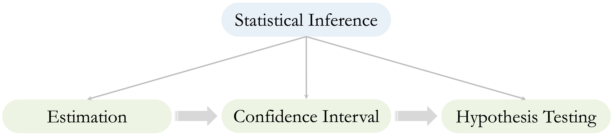
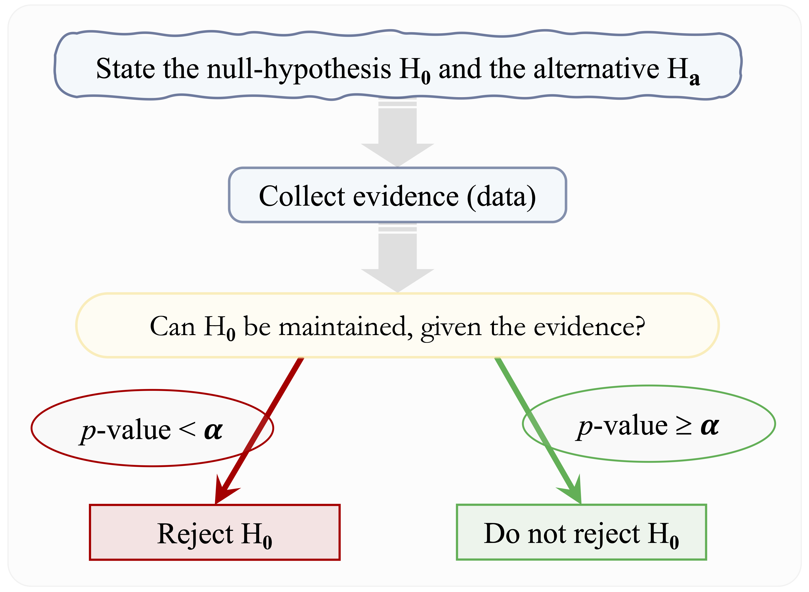
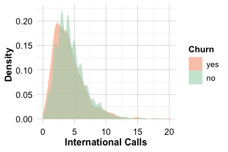
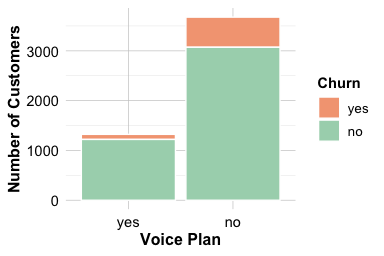
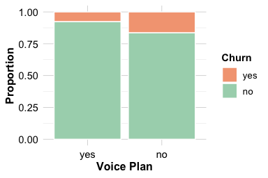
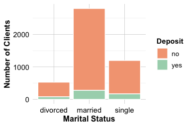

5 Statistical Inference and Hypothesis Testing
Imagine a company observes that customers who make frequent service calls are more likely to churn. Is this pattern the result of a genuine relationship, or is it simply the result of random variation? This is the kind of question that statistical inference is designed to answer.
Statistical inference uses sample data to make conclusions about a larger population, enabling us to move beyond simple descriptions and toward informed, evidence-based decisions. In this chapter, we explore how inference helps answer questions such as: What proportion of customers are likely to churn? and How many service calls do churners typically make?
In Chapter 4, we explored the churn dataset and identified potential patterns, such as increased churn among customers with high daytime minutes or frequent service calls. But how confident can we be that these differences reflect genuine effects rather than sampling variability? Statistical inference offers tools to rigorously assess such questions.
Statistical inference requires not only computation, but also critical thinking. This chapter highlights how to identify common misuses of statistical reasoning and avoid pitfalls in your own analyses, enabling you to draw conclusions that are both rigorous and defensible. For a deeper look at how statistical reasoning can be misused, Darrell Huff’s classic book How to Lie with Statistics remains a relevant resource. Developing a strong foundation in inference will not only enhance your confidence in results but also strengthen your ability to interpret evidence and reason analytically.
What This Chapter Covers
In this chapter, we introduce statistical inference, a set of tools that allow us to draw conclusions about populations based on samples. Building on your exploratory work, you will learn how to transition from spotting patterns to validating insights, an essential shift in the data science workflow. Specifically, you will explore:
Point estimation: Using sample statistics to estimate population parameters.
Confidence intervals: Quantifying uncertainty and interpreting the range of plausible values.
Hypothesis testing: Determining whether observed effects reflect genuine patterns or chance.
Practical tools: Applying common statistical tests including the one- and two-sample t-tests, proportion tests, Z-tests, ANOVA, Chi-square tests, and correlation tests.
You will apply these tools to real-world datasets in R, gaining hands-on experience with inference techniques that support sound, data-driven decisions. Along the way, you will sharpen your ability to distinguish signal from noise, interpret p-values and confidence intervals responsibly, and recognize both the power and limitations of statistical evidence.
By the end of the chapter, you will also revisit where statistical inference fits in the broader data science workflow, especially in steps like validating data partitions and selecting meaningful features for modeling, as discussed in Chapter 6.
5.1 Introduction to Statistical Inference
Statistical inference bridges the gap between what we observe in a sample and what we aim to understand about the population, as illustrated in Figure 5.1. It plays a central role in the Data Science Workflow (see Figure 2.3), particularly after exploratory analysis and before modeling. While exploratory data analysis (EDA) helps uncover potential patterns, such as higher churn among customers with frequent service calls, inference provides a formal framework for testing whether those patterns are statistically meaningful or likely due to random chance.
In fact, hypothesis testing is often used in the next step of the workflow, for example, to verify that training and test sets retain the key characteristics of the full dataset, as discussed in Chapter 6.
As summarized in Figure 5.2, statistical inference relies on three core components:
Point estimation: Estimating population parameters (e.g., the mean or proportion) using sample data.
Confidence intervals: Quantifying uncertainty around these estimates.
Hypothesis testing: Assessing whether observed effects are statistically significant or likely due to chance.

These components build upon one another, starting with estimation, incorporating uncertainty, and culminating in formal testing. Together, they enable data-driven decision-making by helping distinguish real signals from statistical noise. The next sections explore each component in turn, starting with point estimation, through concrete examples and applications in R.
5.2 Estimation from Samples
Suppose a company is planning its customer retention strategy and wants to know: what proportion of users are likely to churn? Or, how many times does a typical churner contact customer service before leaving? These are not just descriptive questions, they are inferential ones. To answer them reliably, we turn to estimation, a fundamental task in statistical inference.
Estimation allows us to draw informed conclusions about population characteristics using sample data, especially when examining the entire population is impractical or impossible. In the churn dataset, for example, we may want to estimate the average number of customer service calls among churners or determine the proportion of customers subscribed to the International Plan.
As outlined in Figure 5.2, estimation typically takes two forms. Point estimation provides a single best guess for a population parameter, for instance, using the sample mean as an estimate of the population mean. Interval estimation, by contrast, accounts for sampling uncertainty by offering a range of plausible values (a confidence interval) within which the true parameter is likely to lie.
Let us explore both types of estimation using concrete examples from the churn dataset.
Example: Estimating the Proportion of Churners
To estimate the proportion of churners in the population, we use the sample proportion as a point estimate:
library(liver)
data(churn)
# Compute the sample proportion of churners
prop.table(table(churn$churn))["yes"]
yes
0.1414The estimated proportion of churners is 0.14. This value provides a reasonable estimate of the true proportion in the broader customer population.
Example: Estimating the Mean Number of Customer Service Calls
To estimate the average number of customer service calls among churners, we calculate the sample mean:
# Filter churners
churned_customers = subset(churn, churn == "yes")
# Calculate the sample mean
(mean_calls <- mean(churned_customers$customer.calls))
[1] 2.254597The average number of service calls among churners is 2.25. This sample mean serves as a point estimate for the population average.
While point estimates are informative, they do not communicate how precise those estimates are. Without accounting for uncertainty, we risk mistaking random variation for meaningful insight, an especially common pitfall when interpreting small or noisy datasets.
This is where confidence intervals play a crucial role. They provide a principled way to express uncertainty and assess the reliability of our estimates. In the next section, we learn how to construct and interpret confidence intervals, addressing questions such as: How close is our estimate likely to be to the true value? and What range of values is supported by the data?
5.3 Quantifying Uncertainty: Confidence Intervals
Suppose a company reports that the average number of customer service calls made by churned customers is 4. But how much trust should we place in that number? Could the true average be slightly higher, or significantly lower? A single number rarely tells the whole story. This is where confidence intervals become essential.
Confidence intervals help quantify the uncertainty associated with estimates of population parameters. Rather than reporting only a point estimate, such as “the average is 4,” a confidence interval might say, “we are 95% confident that the true average lies between 3.8 and 4.2.” This interval accounts for the natural variability that arises when working with sample data.
Formally, a confidence interval combines a point estimate, such as the sample mean or proportion, with a margin of error that reflects expected sampling variability. The general form is:
\[ \text{Point Estimate} \pm \text{Margin of Error} \]
For a population mean, the confidence interval is calculated using the following formula:
\[ \bar{x} \pm z_{\frac{\alpha}{2}} \times \left( \frac{s}{\sqrt{n}} \right), \]
where \(\bar{x}\) is the sample mean, \(s\) is the sample standard deviation, \(n\) is the sample size, and \(z_{\frac{\alpha}{2}}\) is the critical value from the standard normal distribution (for example, 1.96 for a 95% confidence level).
Several factors influence the width of a confidence interval. If the sample size is large, the interval tends to be narrower, indicating more precision. On the other hand, greater variability in the data leads to a wider interval. The choice of confidence level also matters. For instance, a 99% confidence level produces a wider interval than a 90% level because it must include a broader range of plausible values.
To illustrate this, imagine estimating the average height of all students in a university. If the sample includes only 10 students, the resulting interval will likely be wide due to limited data. If the sample includes 1,000 students, the estimate becomes more precise and the confidence interval narrower. This example highlights how increasing the amount of data reduces uncertainty and enhances the reliability of our estimates.
Let us apply this concept to the churn dataset by constructing a 95% confidence interval for the average number of customer service calls among churned customers:
# Calculate mean and standard error
mean_calls <- mean(churned_customers$customer.calls)
se_calls <- sd(churned_customers$customer.calls) / sqrt(nrow(churned_customers))
# Confidence Interval
z_score <- 1.96 # For 95% confidence
ci_lower <- mean_calls - z_score * se_calls
ci_upper <- mean_calls + z_score * se_calls
cat("95% Confidence Interval: [", ci_lower, ",", ci_upper, "]")
95% Confidence Interval: [ 2.120737 , 2.388457 ]The computed interval is (2.12, 2.39), which means we are 95% confident that the true average number of customer service calls for churned customers lies within this range. More precisely, if we were to draw many random samples and construct a confidence interval from each, approximately 95% of those intervals would capture the true population mean.
Another way to compute this confidence interval in R is to use the z.conf() function from liver package, which automatically applies the appropriate distribution based on the sample size and variability:
z.conf(churned_customers$customer.calls, conf = 0.95)
[1] 2.120509 2.388685Confidence intervals are particularly useful when comparing groups. For example, if the confidence intervals for churners and non-churners do not substantially overlap, this suggests a meaningful difference in customer behavior. By providing a range of plausible values instead of a single point estimate, confidence intervals enhance the transparency and credibility of data-driven conclusions.
In the next section, we extend this framework by introducing hypothesis testing, a formal approach for evaluating whether observed effects in a sample are likely to reflect true differences in the population or could have occurred by random chance.
5.4 Hypothesis Testing
Suppose you want to evaluate whether a new pricing strategy improves customer retention. You observe a difference in churn rates between two groups: customers exposed to the strategy and those who were not. But is this difference meaningful, or could it simply be due to chance? Hypothesis testing provides a systematic way to evaluate such questions using statistical evidence.
In the broader data science workflow, hypothesis testing helps move from exploratory observations to conclusions that are supported by formal statistical reasoning. It allows us to test whether the patterns we see in data are likely to reflect genuine population-level effects rather than the randomness of sampling.
At its core, hypothesis testing evaluates claims about population characteristics using sample data. While confidence intervals provide a range of plausible values for an estimate, hypothesis testing focuses on whether the observed evidence is strong enough to support a specific claim about a parameter. The overall process, from stating hypotheses to drawing conclusions, is summarized visually in Figure 5.4.

The hypothesis testing framework revolves around two competing statements:
The null hypothesis (\(H_0\)) represents the default assumption, typically stating that there is no effect, no difference, or no association.
The alternative hypothesis (\(H_a\)) contradicts \(H_0\), asserting that a difference, effect, or relationship does exist.
We assess the strength of evidence by calculating a p-value: the probability of obtaining results as extreme as those observed, assuming \(H_0\) is true. Smaller p-values indicate stronger evidence against \(H_0\). By convention, we reject \(H_0\) when the p-value falls below a predetermined threshold, called the significance level (\(\alpha\)), often set at 0.05.
Reject \(H_0\) if the \(p\)-value is less than \(\alpha\).
For example, if \(p = 0.03\) and \(\alpha = 0.05\), the evidence is considered sufficient to reject \(H_0\). If \(p = 0.12\), we retain \(H_0\) because the evidence is not strong enough to support \(H_a\). It is important to remember that a p-value does not reflect the probability that \(H_0\) is true, but rather the likelihood of observing such data if \(H_0\) were true.
The choice of \(\alpha\) determines the risk of making a Type I error, which means rejecting a true null hypothesis. In high-stakes applications, such as clinical trials or aerospace systems, researchers may choose a stricter threshold (e.g., \(\alpha = 0.01\)) to minimize this risk.
Although p-values offer a standardized way to evaluate hypotheses, they have limitations. In large datasets, even minor differences can appear statistically significant. In small samples, meaningful effects may go undetected due to limited power. Furthermore, reducing outcomes to a binary decision, reject or retain \(H_0\), can oversimplify complex findings.
5.4.1 Types of Hypothesis Tests
The structure of a hypothesis test depends on the nature of the question and the direction of the effect being tested. Depending on how the alternative hypothesis is formulated, tests can take one of the following forms:
Left-tailed test: The alternative hypothesis proposes that the parameter is less than a specified value (\(H_a: \theta < \theta_0\)). For instance, testing whether the average number of customer service calls is less than 3.
Right-tailed test: The alternative hypothesis asserts that the parameter is greater than a specified value (\(H_a: \theta > \theta_0\)). For example, testing whether the churn rate exceeds 30%.
Two-tailed test: The alternative hypothesis states that the parameter is not equal to a specified value (\(H_a: \theta \neq \theta_0\)), capturing deviations in either direction. An example would be testing whether the mean monthly charges differ from $50.
To better understand the logic behind these decisions, consider the analogy of a criminal trial. The null hypothesis represents the presumption of innocence. The alternative hypothesis corresponds to a claim of guilt. The jury weighs the evidence and must either convict (reject \(H_0\)) or acquit (do not reject \(H_0\) due to insufficient evidence). Just as legal verdicts can result in mistakes, hypothesis testing is subject to two types of error, summarized in Table 5.1.
| Decision | Reality: \(H_0\) is True | Reality: \(H_0\) is False |
|---|---|---|
| Do not Reject \(H_0\) | Correct Decision: Acquit an innocent person. | Type II Error (\(\beta\)): Acquit a guilty person. |
| Reject \(H_0\) | Type I Error (\(\alpha\)): Convict an innocent person. | Correct Decision: Convict a guilty person. |
A Type I error (\(\alpha\)) occurs when we reject \(H_0\) even though it is actually true, this is analogous to convicting an innocent person. A Type II error (\(\beta\)) occurs when we do not reject \(H_0\) even though it is false, similar to acquitting someone who is guilty.
The probability of a Type I error is set by the significance level \(\alpha\), which we choose before conducting the test. In contrast, the probability of a Type II error depends on multiple factors, including the sample size, variability in the data, and the magnitude of the effect. A key concept here is power, which refers to the test’s ability to detect a true effect when it exists. Higher power reduces the likelihood of making a Type II error and is often achieved by increasing the sample size.
5.4.2 Common Tests and When to Use Them
How can you determine whether a new marketing campaign increases conversion rates? Or whether customer churn differs significantly across segments? Such questions are central to statistical analysis and require choosing the appropriate hypothesis test based on the structure of the data.
Many learners find it challenging to identify which test suits their specific question, particularly when dealing with different types of variables. To support this decision process, Table Table 5.2 summarizes commonly used hypothesis tests, their null hypotheses, and the data types they apply to. This reference is introduced in lectures and included here as a guide throughout the book.
| Test | Null Hypothesis (\(H_0\)) | Applied To |
|---|---|---|
| One-sample t-test | \(H_0: \mu = \mu_0\) | Single numerical variable |
| Test for Proportion | \(H_0: \pi = \pi_0\) | Single categorical variable |
| Two-sample t-test | \(H_0: \mu_1 = \mu_2\) | Numerical outcome by binary group |
| Two-proportion Z-test | \(H_0: \pi_1 = \pi_2\) | Two binary categorical variables |
| Chi-square Test | \(H_0: \pi_1 = \pi_2 = \pi_3\) | Two categorical variables with > 2 categories |
| Analysis of Variance (ANOVA) | \(H_0: \mu_1 = \mu_2 = \mu_3\) | Numerical outcome by multi-level group |
| Correlation Test | \(H_0: \rho = 0\) | Two numerical variables |
Each test serves a distinct purpose. The t-test compares group means, the Z-test evaluates differences in proportions, and the Chi-square test assesses associations between categorical variables. ANOVA determines whether means differ across multiple groups, and the correlation test measures the strength and direction of linear relationships between numerical variables.
These tests form a core part of the data analyst’s toolkit. In the sections that follow, we demonstrate how to apply them using real-world data and R, guiding you through both interpretation and implementation.
5.5 One-sample t-test
Suppose a company believes that customers who churn typically make two service calls before leaving. Is this assumption still valid? Have recent service trends altered customer behavior? The one-sample t-test offers a principled way to test whether a sample mean differs from a specified benchmark, making it ideal for such questions.
The one-sample t-test evaluates whether the mean of a numerical variable in a population is equal to a given value. It is typically applied when we want to compare a sample mean to a theoretical expectation or business assumption. The test statistic follows a t-distribution, which accounts for added uncertainty when the population standard deviation is unknown and must be estimated from the sample.
The hypotheses depend on the research question:
Two-tailed test: \[ \begin{cases} H_0: \mu = \mu_0 \\ H_a: \mu \neq \mu_0 \end{cases} \]
Left-tailed test: \[ \begin{cases} H_0: \mu \geq \mu_0 \\ H_a: \mu < \mu_0 \end{cases} \]
Right-tailed test: \[ \begin{cases} H_0: \mu \leq \mu_0 \\ H_a: \mu > \mu_0 \end{cases} \]
Example: Testing the Average Number of Customer Service Calls
Suppose we want to test whether the average number of customer service calls among churners differs from the assumed value of 2. The hypotheses are:
\[ \begin{cases} H_0: \mu = 2 \\ H_a: \mu \neq 2 \end{cases} \]
We use the churn dataset from the liver package and filter for customers who have churned:
We use the subset() function to isolate the churned customers. The relevant variable is customer.calls, which records how many times each customer contacted service before churning.
We then apply the t.test() function in R to compare the sample mean to the benchmark value of 2:
t_test <- t.test(churned_customers$customer.calls, mu = 2)
t_test
One Sample t-test
data: churned_customers$customer.calls
t = 3.7278, df = 706, p-value = 0.0002086
alternative hypothesis: true mean is not equal to 2
95 percent confidence interval:
2.120509 2.388685
sample estimates:
mean of x
2.254597The function returns several key results: a test statistic, p-value, confidence interval, and degrees of freedom. The p-value is close to zero, that is less than \(\alpha = 0.05\). We therefore reject the null hypothesis and conclude that the average number of calls differs from 2.
The 95% confidence interval is (2.12, 2.39). Since this interval does not include 2, the result reinforces our conclusion. The sample mean is 2.25, which serves as our best estimate of the true average in the population.
Because the population standard deviation is unknown, the test statistic follows a t-distribution with \(n - 1\) degrees of freedom.
The one-sample t-test is a powerful method for comparing a sample mean to a fixed benchmark. While statistical significance provides useful evidence, practical relevance must also be considered. A difference of 0.1 calls may be negligible, whereas a difference of two calls might signal a need to revisit service policies. By combining statistical reasoning with business context, the one-sample t-test helps translate data into informed action.
5.6 Hypothesis Testing for Proportion
Suppose a telecom company believes that 15% of its customers churn each year. Has that rate changed in the current quarter? Are recent retention strategies making a measurable difference? These are typical questions in business analytics. When we want to assess whether the observed proportion of a binary outcome, such as churned versus not churned, differs from a historical or expected benchmark, we use a test for proportion. This approach is particularly useful for binary categorical variables and helps determine whether a sample proportion deviates meaningfully from a specified value.
The test evaluates whether the proportion (\(\pi\)) of a specific category in a population differs significantly from a hypothesized value (\(\pi_0\)). In the example below, we apply this test using the prop.test() function in R, which can be used to evaluate either a single proportion or the difference between two proportions.
Example: Testing Whether the Churn Rate Differs from 15%
A company assumes that 15% of its customers churn. To test whether the actual churn rate in the churn dataset differs from this expectation, we set up the following hypotheses:
\[ \begin{cases} H_0: \pi = 0.15 \\ H_a: \pi \neq 0.15 \end{cases} \]
We conduct a two-tailed proportion test using R:
prop_test <- prop.test(x = sum(churn$churn == "yes"),
n = nrow(churn),
p = 0.15)
prop_test
1-sample proportions test with continuity correction
data: sum(churn$churn == "yes") out of nrow(churn), null probability 0.15
X-squared = 2.8333, df = 1, p-value = 0.09233
alternative hypothesis: true p is not equal to 0.15
95 percent confidence interval:
0.1319201 0.1514362
sample estimates:
p
0.1414In this code, x gives the number of churners, n specifies the total sample size, and p = 0.15 defines the hypothesized proportion. The test evaluates whether the observed proportion significantly differs from this value, using a chi-square approximation.
The output includes three key results: the p-value, the confidence interval, and the observed sample proportion. The p-value is 0.092. Because it exceeds the standard significance level of \(\alpha = 0.05\), we do not reject the null hypothesis. We conclude that there is no statistically significant evidence to suggest that the population proportion of churners differs from 15%.
The 95% confidence interval for the true proportion is (0.132, 0.151). Since this interval contains 0.15, the result is consistent with the decision not to reject \(H_0\). The observed sample proportion is 0.141, which serves as our best estimate of the true churn rate in the population.
This example illustrates how a proportion test can be used to validate assumptions about categorical outcomes. The p-value determines statistical significance, while the confidence interval and sample proportion provide important context. When used alongside domain knowledge, this method supports evidence-based decisions in evaluating changes in customer behavior.
5.7 Two-sample t-test
Do customers who churn use international calling services less than those who stay? If so, can international call behavior help predict churn risk? The two-sample t-test provides a statistical approach to answer such questions by comparing the means of a numerical variable between two independent groups. Also known as Student’s t-test, this method evaluates whether an observed difference in group means is statistically significant or likely due to random variation. It is named after William Sealy Gosset, who published under the pseudonym “Student” while working at Guinness Brewery.
In Chapter 4, Section 4.5, we explored the relationship between international calling behavior (intl.calls) and churn status using box plots and density plots. These visualizations suggested that churners might make fewer international calls than non-churners. But are these differences statistically meaningful?


The boxplot (left) shows that churners tend to make slightly fewer international calls, and the density plot (right) suggests their distribution is modestly left-shifted. To evaluate whether these differences are statistically significant, we apply the two-sample t-test.
We start by formulating the hypotheses:
\[ \begin{cases} H_0: \mu_1 = \mu_2 \\ H_a: \mu_1 \neq \mu_2 \end{cases} \]
Here, \(\mu_1\) and \(\mu_2\) represent the average number of international calls for churners and non-churners, respectively. The null hypothesis states that the group means are equal, while the alternative suggests a difference.
To perform the test, we use the t.test() function in R. The formula syntax intl.calls ~ churn tells R to compare the intl.calls variable across the two levels of the churn group:
t_test_calls <- t.test(intl.calls ~ churn, data = churn)
t_test_calls
Welch Two Sample t-test
data: intl.calls by churn
t = -3.2138, df = 931.13, p-value = 0.001355
alternative hypothesis: true difference in means between group yes and group no is not equal to 0
95 percent confidence interval:
-0.5324872 -0.1287201
sample estimates:
mean in group yes mean in group no
4.151344 4.481947This function outputs the test statistic, p-value, degrees of freedom, confidence interval, and estimated group means. The p-value is 0.0014, which is less than the standard significance level of \(\alpha = 0.05\). We therefore reject the null hypothesis and conclude that the mean number of international calls differs between churners and non-churners.
The 95% confidence interval for the difference in means is (-0.532, -0.129). Because zero is not in this range, the result supports our conclusion that the group means are different. The estimated group means are 4.15 for churners and 4.48 for non-churners. These values suggest that churners tend to make fewer international calls on average, an insight that may have business implications.
The two-sample t-test assumes that the two groups are independent and that the numerical variable is approximately normally distributed within each group. When sample sizes are large, the Central Limit Theorem provides robustness to non-normality. If the data are heavily skewed or contain outliers, a nonparametric alternative such as the Mann–Whitney U test may be more appropriate.
From a business perspective, this result suggests that international call frequency may be associated with customer churn. If lower usage of international calls reflects dissatisfaction or cost sensitivity, the company might consider offering promotional plans or targeted outreach to low-usage customers.
It is also worth considering the size of the effect. A statistically significant difference does not always imply a practically meaningful one. For example, a difference of 0.1 calls may be negligible, while a difference of two calls could justify a change in pricing or support strategies.
Although we used a two-tailed test here, a one-tailed version may be preferable if the research question is directional, for example, if we expect churners to make fewer international calls.
The two-sample t-test is a powerful tool for confirming patterns seen in exploratory analysis. It connects statistical reasoning with real-world decisions, allowing analysts to move from visual insights to data-driven conclusions.
5.8 Two-sample Z-test
Suppose your company notices that customers without a Voice Mail Plan seem to churn more often. Is this pattern statistically significant, or just a coincidence? The two-sample Z-test helps answer questions like this by comparing proportions between two independent groups.
While the two-sample t-test is used for comparing means of numerical variables, the Z-test is designed for binary outcomes such as churn status or plan enrollment. It evaluates whether the observed difference in proportions between two groups is statistically significant or likely due to chance.
In Chapter 4.4, we explored the relationship between the Voice Mail Plan (voice.plan) and churn status using bar plots. While the visualizations suggested that churn rates might differ between customers with and without a Voice Mail Plan, hypothesis testing provides a formal framework for evaluating whether this difference is statistically meaningful.


The left plot shows raw churn counts across Voice Mail Plan categories, while the right plot shows proportional differences. Customers without a Voice Mail Plan appear more likely to churn. To test whether this visual pattern reflects a statistically significant difference, we define the hypotheses:
\[ \begin{cases} H_0: \pi_1 = \pi_2 \\ H_a: \pi_1 \neq \pi_2 \end{cases} \]
Here, \(pi_1\) and \(pi_2\) are the proportions of Voice Mail Plan users among churners and non-churners, respectively.
We begin by summarizing the data in a contingency table:
table_plan = table(churn$churn, churn$voice.plan, dnn = c("churn", "voice.plan"))
table_plan
voice.plan
churn yes no
yes 102 605
no 1221 3072Next, we apply the prop.test() function to compare the two proportions:
z_test = prop.test(table_plan)
z_test
2-sample test for equality of proportions with continuity correction
data: table_plan
X-squared = 60.552, df = 1, p-value = 7.165e-15
alternative hypothesis: two.sided
95 percent confidence interval:
-0.1701734 -0.1101165
sample estimates:
prop 1 prop 2
0.1442716 0.2844165The prop.test() function performs a test for equality of two proportions. It returns a p-value, confidence interval for the difference in proportions, and the estimated group proportions.
The p-value is close to zero, well below the significance level of 0.05. We therefore reject the null hypothesis and conclude that the proportion of Voice Mail Plan users differs significantly between churners and non-churners.
The 95% confidence interval for the difference in proportions is (-0.17, -0.11). Because this interval does not include zero, it supports our conclusion that there is a meaningful difference between the groups. The observed sample proportions of churners are 0.144 for customers with a Voice Mail Plan and 0.284 for customers without one, indicating that customers without a Voice Mail Plan are more likely to churn.
This result highlights a potential link between Voice Mail Plan usage and customer retention. Businesses might explore whether the plan provides value to customers or if it serves as a marker of engagement. They may also consider promoting the plan to at-risk customers. While the statistical result is clear, practical significance requires further evaluation, would promoting plan enrollment lead to better retention outcomes? That is a question best answered through follow-up testing and experimentation.
The two-sample Z-test provides a rigorous way to compare proportions and complements visual exploration. By combining statistical inference with domain knowledge, companies can make informed decisions to improve retention strategies.
5.9 Chi-square Test
Do deposit subscription rates vary by marital status? And if so, can banks use this information to better target their campaigns? These are typical questions in marketing analytics, where categorical variables often have more than two levels. The Chi-square test is a statistical method designed to answer such questions. It evaluates whether two categorical variables are associated, making it especially useful in business contexts such as customer segmentation and marketing strategy.
While earlier tests focused on comparing means or proportions between two groups, the Chi-square test examines whether the distribution of outcomes across categories deviates from what we would expect under the assumption of independence. It quantifies whether observed discrepancies in frequencies are too large to be attributed to random variation.
To illustrate, we analyze whether marital status is associated with deposit purchases in the bank dataset (from the liver package). The variable marital includes “divorced,” “married,” and “single” categories. The outcome variable deposit indicates whether a customer purchased a term deposit (“yes” or “no”). This dataset will also appear in later chapters for classification modeling.
We begin by visualizing the relationship between marital status and deposit subscription using bar plots:

The first plot shows the raw counts of deposit outcomes across marital categories, while the second plot presents relative proportions. The visuals suggest possible differences in behavior among marital groups, but we need statistical evidence to determine whether these differences are significant.
To perform a Chi-square test, we first summarize the data in a contingency table. This table tallies the number of observations for each combination of marital status and deposit outcome:
table_marital <- table(bank$deposit, bank$marital, dnn = c("deposit", "marital"))
table_marital
marital
deposit divorced married single
no 451 2520 1029
yes 77 277 167This table serves as the input to the chisq.test() function, which is designed to assess whether two categorical variables are independent. The hypotheses are:
\[ \begin{cases} H_0: \text{marital and deposit are independent} \\ H_a: \text{marital and deposit are not independent} \end{cases} \]
We conduct the test as follows:
chisq_test <- chisq.test(table_marital)
chisq_test
Pearson's Chi-squared test
data: table_marital
X-squared = 19.03, df = 2, p-value = 7.374e-05The chisq.test() function compares the observed counts in the table with the expected counts under the assumption of independence. It returns the Chi-square statistic, degrees of freedom, expected frequencies, and a corresponding p-value. In this case, because the p-value is less than the significance level (\(\alpha = 0.05\)), we reject the null hypothesis and conclude that marital status and deposit purchase are associated rather than independent.
The expected counts are especially useful. They show how many deposit purchases would be expected in each marital category if no association existed. By comparing these to the observed counts, we can identify which group differences are driving the result. For instance, if married customers subscribe to deposits more frequently than expected, they may be a key contributor to the observed association.
From a business standpoint, this finding supports the idea that marketing strategies can be tailored based on marital status. Banks might promote family-oriented savings plans for married clients, while designing more flexible, goal-oriented offers for single individuals.
The Chi-square test is a tool for uncovering associations between categorical variables. It complements visualizations and provides a rigorous foundation for exploring customer behavior patterns and designing more targeted outreach strategies.
5.10 Analysis of Variance (ANOVA) Test
So far, we have examined hypothesis tests that compare two groups, such as the two-sample t-test and the Z-test. But what if we want to compare more than two groups? For example, does the average price of diamonds vary across different quality ratings? When dealing with a categorical variable that has multiple levels, the Analysis of Variance (ANOVA) provides a principled way to test whether at least one group mean differs significantly from the others.
ANOVA is especially useful for evaluating how a categorical factor with more than two levels affects a numerical outcome. It assesses whether the variability between group means is greater than what would be expected due to random sampling alone. The test statistic follows an F-distribution, which compares variance across and within groups.
To illustrate, consider the diamonds dataset from the ggplot2 package. We analyze whether the mean price (price) differs by cut quality (cut), which has five levels: “Fair,” “Good,” “Very Good,” “Premium,” and “Ideal.” What can we learn from the distribution of prices across cut categories?
data(diamonds)
ggplot(data = diamonds) +
geom_boxplot(aes(x = cut, y = price, fill = cut)) +
scale_fill_manual(values = c("#F4A582", "#FDBF6F", "#FFFFBF", "#A6D5BA", "#1B9E77"))
The box plot shows the distribution and median prices for each cut category. The plots suggest some variation in price across the different cut categories, but they do not reveal a clear association between price and cut. Therefore, we proceed with statistical testing to determine whether the observed differences are statistically meaningful.
To evaluate whether cut quality affects diamond price, we compare the mean price across all five categories. Our hypotheses are:
\[ \begin{cases} H_0: \mu_1 = \mu_2 = \mu_3 = \mu_4 = \mu_5 \quad \text{(All group means are equal)} \\ H_a: \text{At least one group mean differs} \end{cases} \]
We apply the aov() function in R, which fits a linear model and returns an ANOVA table that summarizes variation between and within groups:
anova_test <- aov(price ~ cut, data = diamonds)
summary(anova_test)
Df Sum Sq Mean Sq F value Pr(>F)
cut 4 1.104e+10 2.760e+09 175.7 <2e-16 ***
Residuals 53935 8.474e+11 1.571e+07
---
Signif. codes: 0 '***' 0.001 '**' 0.01 '*' 0.05 '.' 0.1 ' ' 1The output reports the degrees of freedom (Df), the F-statistic (F value), and the corresponding p-value (Pr(>F)). Because, here, the p-value is below the significance level (\(\alpha = 0.05\)), we reject the null hypothesis and conclude that cut quality has a statistically significant effect on diamond price.
However, rejecting \(H_0\) only tells us that at least one group differs. It does not tell us which cuts differ from each other. To identify the specific differences, we can use post-hoc tests such as Tukey’s Honest Significant Difference (HSD) test, which controls for multiple comparisons while revealing which group pairs have statistically different means.
From a business standpoint, these insights can support pricing strategy. If higher-quality cuts yield higher prices, retailers might highlight them in marketing campaigns. On the other hand, if prices between mid-tier cuts are statistically similar, pricing policies might be adjusted to better reflect perceived value.
In summary, ANOVA is a valuable method for testing whether group means differ when working with categorical variables that have multiple levels. By combining graphical summaries with formal inference, it supports rigorous and interpretable conclusions that inform data-driven decisions.
5.11 Correlation Test
Suppose you are analyzing sales data and notice that as advertising spend increases, so do product sales. Is this trend real, or just a coincidence? In exploratory data analysis (see Section 4.6), we used scatter plots and heatmaps to visually assess such relationships. Now, we take a step further. The correlation test offers a formal way to determine whether an observed linear association between two numerical variables is statistically significant, or merely a product of random chance.
The correlation test evaluates both the strength and direction of a relationship by testing the null hypothesis that the population correlation coefficient (\(\rho\)) is equal to zero. It is particularly useful when investigating how two continuous variables co-vary, insights that can inform business strategy, pricing models, or predictive analysis.
To illustrate, we examine whether a significant relationship exists between carat (diamond weight) and price in the diamonds dataset from the ggplot2 package. A positive correlation is anticipated between these variables, as larger diamonds typically command higher prices. We begin with a scatter plot to visually assess the relationship:
ggplot(diamonds, aes(x = carat, y = price)) +
geom_point(color = "#377EB8", alpha = 0.3, size = 0.6) +
labs(x = "Diamond Weight (Carats)", y = "Price (USD)")
The scatter plot reveals a clear upward trend, suggesting that as carat increases, price tends to rise as well. However, visualization alone does not provide formal statistical evidence. To test the relationship more rigorously, we define the following hypotheses:
\[ \begin{cases} H_0: \rho = 0 \quad \text{(No linear correlation)} \\ H_a: \rho \neq 0 \quad \text{(A significant linear correlation exists)} \end{cases} \]
We conduct the test using the cor.test() function in R, which performs a Pearson correlation test and returns the correlation coefficient, p-value, and a confidence interval for \(\rho\):
cor_test <- cor.test(diamonds$carat, diamonds$price)
cor_test
Pearson's product-moment correlation
data: diamonds$carat and diamonds$price
t = 551.41, df = 53938, p-value < 2.2e-16
alternative hypothesis: true correlation is not equal to 0
95 percent confidence interval:
0.9203098 0.9228530
sample estimates:
cor
0.9215913The output provides three key results. First, the p-value is close to zero and therefore well below the significance level (\(\alpha = 0.05\)). Thus, we reject the null hypothesis and conclude that the correlation between carat and price is statistically significant. Second, the correlation coefficient is 0.92, reflecting a strong positive linear association. Finally, the 95% confidence interval for the true population correlation is (0.92, 0.923), which does not include zero and thus reinforces the evidence for a significant relationship.
This result has both statistical and practical implications. From a business perspective, the strong correlation between carat and price suggests that carat is a key determinant in diamond pricing. However, while statistically significant, the correlation alone may not capture all relevant factors. For instance, variation in price at similar carat levels may be explained by other attributes such as clarity, cut, or certification. Further analysis, such as multivariate regression, can help disentangle these effects.
The correlation test provides a rigorous framework for assessing linear relationships between numerical variables. By integrating visual exploration, hypothesis testing, and confidence estimation, it supports evidence-based modeling and business decision-making.
As we have seen across different types of hypothesis tests, including tests for means, proportions, and correlations, statistical inference provides a structured way to move from observed data to generalizable conclusions. In the next section, we take a step back to view these tools in a broader context: understanding how they support the goals of data science and guide decision-making under uncertainty.
5.12 From Inference to Prediction in Data Science
You have identified a statistically significant relationship between churn and service calls. But will this insight help predict which customers are likely to churn next month? This question captures a key transition in the data science workflow: moving from understanding relationships to predicting outcomes.
While the core principles of estimation, confidence intervals, and hypothesis testing remain foundational, their role evolves as we shift from traditional statistical inference to building predictive models. In classical statistics, the goal is to draw conclusions about populations based on sample data. In contrast, data science emphasizes predictive performance and generalization to new, unseen data.
In large datasets, even small effects can achieve statistical significance. However, statistical significance does not always imply practical importance. For instance, discovering that churners make 0.1 fewer calls on average may be statistically significant but offer little value for decision-making. When building models, the focus is less on whether a variable is significant in isolation and more on whether it contributes meaningfully to prediction accuracy.
Traditional inference begins with a specific hypothesis, such as whether a promotion improves sales. Data science often starts from exploration. Analysts examine many features, iterate on transformations, and refine models based on validation performance. The emphasis shifts from confirming hypotheses to uncovering patterns that support generalization.
Even so, inference remains a valuable tool in the modeling process, particularly during data preparation and diagnostics. When splitting a dataset into training and test sets, for example, t-tests or chi-square tests can verify that the subsets are comparable, helping ensure that model evaluation is fair and unbiased. In feature selection, inference-based reasoning helps identify variables that show meaningful associations with the outcome. Later, in the modeling phase, residual analysis and other diagnostic checks are grounded in statistical concepts to detect overfitting or systematic bias.
Understanding how the role of inference shifts in predictive contexts allows us to apply these methods more effectively. In the next chapter, we begin building models. The principles introduced here, rigorous thinking about uncertainty, structure, and significance, remain essential for developing models that are robust, interpretable, and grounded in evidence.
5.13 Chapter Summary and Takeaways
This chapter equipped you with the essential tools of statistical inference. You learned how to use point estimates and confidence intervals to quantify uncertainty and how to apply hypothesis testing to evaluate evidence for or against specific claims about populations.
We applied a range of hypothesis tests through real-world examples: t-tests for comparing group means, proportion tests for binary outcomes, ANOVA for examining differences across multiple groups, the Chi-square test for assessing associations between categorical variables, and correlation tests for measuring linear relationships between numerical variables.
Together, these methods form a framework for drawing rigorous, data-driven conclusions. In the context of data science, they support not only analysis but also model diagnostics, variable selection, and interpretability. While p-values help assess statistical significance, they should be considered alongside effect size, assumptions, and domain relevance to ensure results are meaningful and actionable.
Statistical inference remains a vital part of the modeling pipeline, guiding how we validate data partitions, assess residual patterns, and select features that contribute to robust and explainable models. For readers seeking a deeper dive into statistical inference beyond its role in data science workflows, we recommend Intuitive Introductory Statistics by Wolfe and Schneider (Wolfe and Schneider 2017).
In the next chapter, we transition from inference to modeling, beginning with one of the most critical steps in any supervised learning task: dividing data into training and test sets. This step ensures that model evaluation is fair, transparent, and reliable, setting the stage for building predictive systems that generalize to new data.
5.14 Exercises
This set of exercises is designed to help you consolidate and apply what you have learned about statistical inference. They are organized into three parts: conceptual questions to deepen your theoretical grasp, hands-on tasks to practice applying inference methods in R, and reflection prompts to encourage thoughtful integration of statistical thinking into your broader data science workflow.
Conceptual Questions
Why is hypothesis testing important in data science? Explain its role in making data-driven decisions and how it complements exploratory data analysis.
What is the difference between a confidence interval and a hypothesis test? How do they provide different ways of drawing conclusions about population parameters?
The p-value represents the probability of observing the sample data, or something more extreme, assuming the null hypothesis is true. How should p-values be interpreted, and why is a p-value of 0.001 in a two-sample t-test not necessarily evidence of practical significance?
Explain the concepts of Type I and Type II errors in hypothesis testing. Why is it important to balance the risks of these errors when designing statistical tests?
In a hypothesis test, failing to reject the null hypothesis does not imply that the null hypothesis is true. Explain why this is the case and discuss the implications of this result in practice.
When working with small sample sizes, why is the t-distribution used instead of the normal distribution? How does the shape of the t-distribution change as the sample size increases?
One-tailed and two-tailed hypothesis tests serve different purposes. When would a one-tailed test be more appropriate than a two-tailed test? Provide an example where each type of test would be applicable.
Both the two-sample Z-test and the Chi-square test analyze categorical data but serve different purposes. How do they differ, and when would one be preferred over the other?
The Analysis of Variance (ANOVA) test is designed to compare means across multiple groups. Why can’t multiple t-tests be used instead? What is the advantage of using ANOVA in this context?
Hands-On Practice: Hypothesis Testing in R
For the following exercises, use the churn, bank, marketing, and diamonds datasets available in the liver and ggplot2 packages. We have previously used the churn, bank, and diamonds datasets in this and earlier chapters. In Chapter 10, we will introduce the marketing dataset for regression analysis.
To load the datasets, use the following commands:
- We are interested in knowing the 90% confidence interval for the population mean of the variable “
night.calls” in the churn dataset. In R, we can obtain a confidence interval for the population mean using thet.test()function as follows:
t.test(x = churn$night.calls, conf.level = 0.90)$"conf.int"
[1] 99.45484 100.38356
attr(,"conf.level")
[1] 0.9Interpret the confidence interval in the context of customer service calls made at night. Report the 99% confidence interval for the population mean of “night.calls” and compare it with the 90% confidence interval. Which interval is wider, and what does this indicate about the precision of the estimates? Why does increasing the confidence level result in a wider interval, and how does this impact decision-making in a business context?
- Subgroup analyses help identify behavioral patterns in specific customer segments. In the churn dataset, we focus on customers with both an International Plan and a Voice Mail Plan who make more than 220 daytime minutes of calls. To create this subset, we use:
sub_churn = subset(churn, (intl.plan == "yes") & (voice.plan == "yes") & (day.mins > 220)) Next, we compute the 95% confidence interval for the proportion of churners in this subset using prop.test():
prop.test(table(sub_churn$churn), conf.level = 0.95)$"conf.int"
[1] 0.2595701 0.5911490
attr(,"conf.level")
[1] 0.95Compare this confidence interval with the overall churn rate in the dataset (see Section 5.3). What insights can be drawn about this customer segment, and how might they inform retention strategies?
- In the churn dataset, we test whether the mean number of customer service calls (
customer.calls) is greater than 1.5 at a significance level of 0.01. The right-tailed test is formulated as:
\[ \begin{cases} H_0: \mu \leq 1.5 \\ H_a: \mu > 1.5 \end{cases} \]
Since the level of significance is \(\alpha = 0.01\), the confidence level is \(1-\alpha = 0.99\). We perform the test using:
t.test(x = churn$customer.calls,
mu = 1.5,
alternative = "greater",
conf.level = 0.99)
One Sample t-test
data: churn$customer.calls
t = 3.8106, df = 4999, p-value = 7.015e-05
alternative hypothesis: true mean is greater than 1.5
99 percent confidence interval:
1.527407 Inf
sample estimates:
mean of x
1.5704Report the p-value and determine whether to reject the null hypothesis at \(\alpha=0.01\). Explain your decision and discuss its implications in the context of customer service interactions.
- In the churn dataset, we test whether the proportion of churners (\(\pi\)) is less than 0.14 at a significance level of \(\alpha=0.01\). The confidence level is \(99\%\), corresponding to \(1-\alpha = 0.99\). The test is conducted in R using:
prop.test(table(churn$churn),
p = 0.14,
alternative = "less",
conf.level = 0.99)
1-sample proportions test with continuity correction
data: table(churn$churn), null probability 0.14
X-squared = 0.070183, df = 1, p-value = 0.6045
alternative hypothesis: true p is less than 0.14
99 percent confidence interval:
0.0000000 0.1533547
sample estimates:
p
0.1414State the null and alternative hypotheses. Report the p-value and determine whether to reject the null hypothesis at \(\alpha=0.01\). Explain your conclusion and its potential impact on customer retention strategies.
- In the churn dataset, we examine whether the number of customer service calls (
customer.calls) differs between churners and non-churners. To test this, we perform a two-sample t-test:
t.test(customer.calls ~ churn, data = churn)
Welch Two Sample t-test
data: customer.calls by churn
t = 11.292, df = 804.21, p-value < 2.2e-16
alternative hypothesis: true difference in means between group yes and group no is not equal to 0
95 percent confidence interval:
0.6583525 0.9353976
sample estimates:
mean in group yes mean in group no
2.254597 1.457722State the null and alternative hypotheses. Determine whether to reject the null hypothesis at a significance level of \(\alpha=0.05\). Report the p-value and interpret the results, explaining whether there is evidence of a relationship between churn status and customer service call frequency.
- In the marketing dataset, we test whether there is a positive relationship between
revenueandspendat a significance level of \(\alpha = 0.025\). We perform a one-tailed correlation test using:
cor.test(x = marketing$spend,
y = marketing$revenue,
alternative = "greater",
conf.level = 0.975)
Pearson's product-moment correlation
data: marketing$spend and marketing$revenue
t = 7.9284, df = 38, p-value = 7.075e-10
alternative hypothesis: true correlation is greater than 0
97.5 percent confidence interval:
0.6338152 1.0000000
sample estimates:
cor
0.789455State the null and alternative hypotheses. Report the p-value and determine whether to reject the null hypothesis. Explain your decision and discuss its implications for understanding the relationship between marketing spend and revenue.
In the churn dataset, for the variable “
day.mins”, test whether the mean number of “Day Minutes” is greater than 180. Set the level of significance to be 0.05.In the churn dataset, for the variable “
intl.plan” test at \(\alpha=0.05\) whether the proportion of customers who have international plan is less than 0.15.In the churn dataset, test whether there is a relationship between the target variable “
churn” and the variable “intl.charge” with \(\alpha=0.05\).In the bank dataset, test whether there is a relationship between the target variable “
deposit” and the variable “education” with \(\alpha=0.05\).Compute the proportion of customers in the churn dataset who have an International Plan (
intl.plan). Construct a 95% confidence interval for this proportion using R, and interpret the confidence interval in the context of customer subscriptions.Using the churn dataset, test whether the average number of daytime minutes (
day.mins) for churners differs significantly from 200 minutes. Conduct a one-sample t-test in R and interpret the results in relation to customer behavior.Compare the average number of international calls (
intl.calls) between churners and non-churners. Perform a two-sample t-test and evaluate whether the observed differences in means are statistically significant.Test whether the proportion of customers with a Voice Mail Plan (
voice.plan) differs between churners and non-churners. Use a two-sample Z-test in R and interpret the results, considering the implications for customer retention strategies.Investigate whether marital status (
marital) is associated with deposit subscription (deposit) in the bank dataset. Construct a contingency table and perform a Chi-square test to assess whether marital status has a significant impact on deposit purchasing behavior.Using the diamonds dataset, test whether the mean price of diamonds differs across different diamond cuts (
cut). Conduct an ANOVA test and interpret the results. If the test finds significant differences, discuss how post-hoc tests could be used to further explore the findings.Assess the correlation between
caratandpricein the diamonds dataset. Perform a correlation test in R and visualize the relationship using a scatter plot. Interpret the results in the context of diamond pricing.Construct a 95% confidence interval for the mean number of customer service calls (
customer.calls) among churners. Explain how the confidence interval helps quantify uncertainty and how it might inform business decisions regarding customer support.Take a random sample of 100 observations from the churn dataset and test whether the average
eve.minsdiffers from 200. Repeat the test using a sample of 1000 observations. Compare the results and discuss how sample size affects hypothesis testing and statistical power.Suppose a hypothesis test indicates that customers with a Voice Mail Plan are significantly less likely to churn (p \(<\) 0.01). What are some potential business strategies a company could implement based on this finding? Beyond statistical significance, what additional factors should be considered before making marketing decisions?
Reflection
How do confidence intervals and hypothesis tests complement each other when assessing the reliability of results in data science?
In your work or studies, can you think of a situation where failing to reject the null hypothesis was an important finding? What did it help clarify?
Describe a time when statistical significance and practical significance diverged in a real-world example. What lesson did you learn?
How might understanding Type I and Type II errors influence how you interpret results from automated reports, dashboards, or A/B tests?
When designing a data analysis for your own project, how would you decide which statistical test to use? What questions would guide your choice?
How can confidence intervals help communicate uncertainty to non-technical stakeholders? Can you think of a better way to present this information visually?
Which statistical test from this chapter do you feel most comfortable with, and which would you like to practice more? Why?